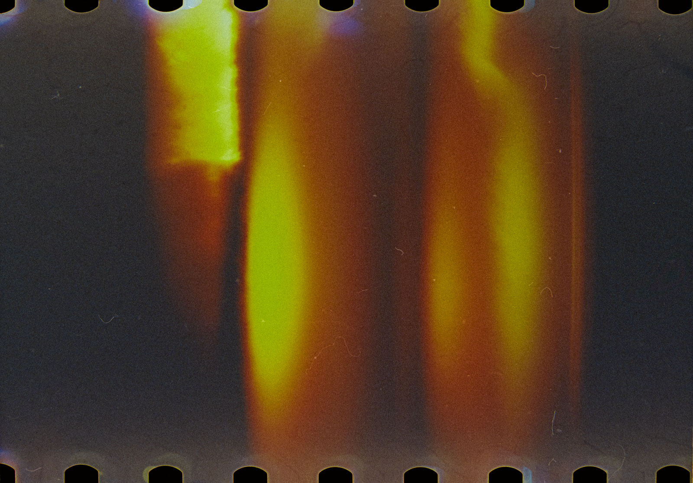
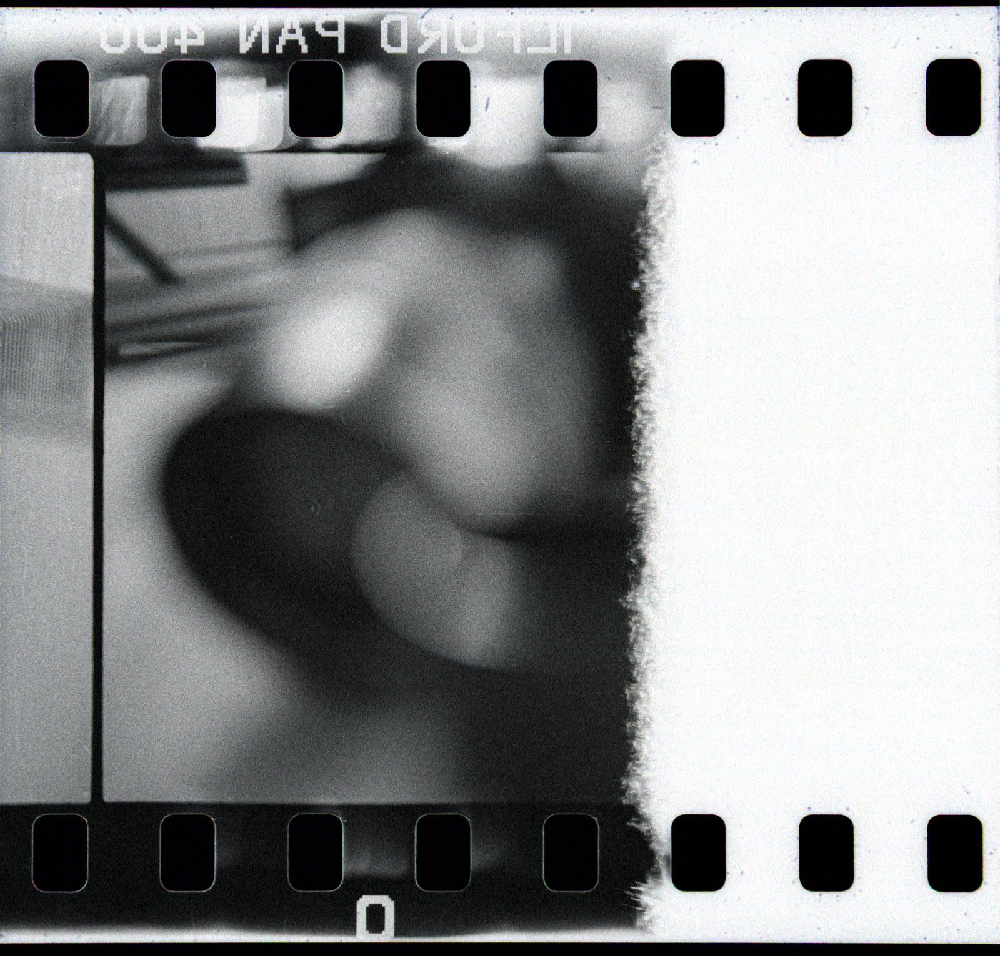
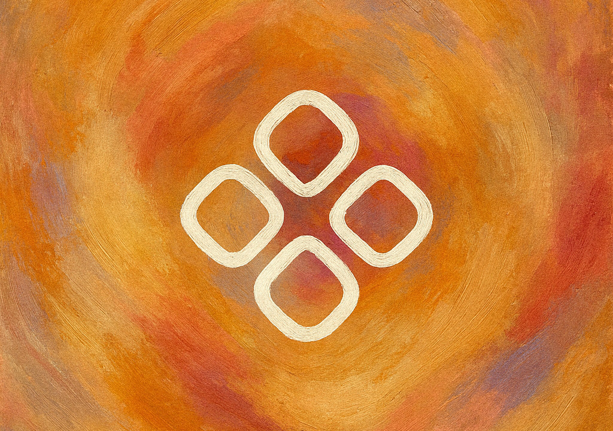

A digitális technikák világa lüktet. Kattintunk, frissítünk, verziózunk, törlünk, újrakezdünk. A fotózásban és a tervezésben egyaránt végtelen a próbálkozás lehetősége és ezzel együtt eltűnt a tét. A digitális képet bármikor újra exponálhatod, a layoutot bármikor visszavonhatod. Nincs ára a hibáknak, csak memóriamérete. A gyorsaság ma erénynek számít, pedig gyakran csak menekülés. Menekülés a döntés elől, hogy valamit késznek kell tekinteni. Így lesz a képernyőn minden ideiglenes, minden megfordítható és közben észrevétlenül kopik el a figyelem.

Sietünk. Nincs idő semmire. Feltételezésekből tervezünk, határozunk, döntünk. Rövidtávon nyerünk, mert a határidő kipipálva, az anyag leadva, a sprint lezárva, a feature kint van - de hosszútávon? A ritmus, amit diktálunk magunknak, előbb-utóbb szétesik. A kapkodás finomságot öl, a hatékonyság emberi érzéket. A döntéseink egyre gyorsabbak, de egyre kevésbé átgondoltak.
Anno még nem volt választás: a film előhívása, a papír száradása, a vegyszerszag a levegőben, mind időt követelt. Nem tűrésből, hanem természetéből. A lassúság nem „lassú folyamat” volt, hanem maga a folyamat. Amikor UI-t vagy fotót készítek, néha érzem, hogy hiányzik ez a csend. A pillanat, amikor még nem kattintok, csak nézek. A vázlat, amit nem dobok ki azonnal a Figma-boardról, hanem visszanézek rá másnap. A fény, amit nem erőltetek, hanem várom, hogy megérkezzen.
Az analóg gondolkodás nem arról szól, hogy újra filmre fotózzunk, vagy ceruzával tervezzünk wireframe-et. Hanem arról, hogy visszaadjuk az idő becsületét. Mert nem minden döntést kell azonnal meghozni. Amit azonnal teszel közzé, az ritkán szól örökké.
Döntéseink többsége ma sietségből születik. Reakcióból, nem megértésből. De az, ami igazán megmarad, másképp készül. Nem a leggyorsabb döntésből, hanem abból, amit már kétszer újragondoltál. Kutattál, kérdeztél, teszteltél, prototipizáltál, és közben tudatosan lecsendesítetted a saját induló ötleteidet. A Double Diamond nem csak rajz a falon, hanem fegyelem. Az első gyémántban a brief értelmezése után terepre mész. Nem azért, hogy igazold az első sejtést, hanem hogy megértsd a valóságot. Interjúkat készítesz, történeteket hallgatsz, forrásokat fésülsz át, majd szintetizálsz. A rebrief ilyenkor nem szeszély, hanem tisztesség. Amikor kiderül, hogy a feltételezett probléma nem az igazi, akkor nem szépíted, hanem átírod a kérdést.

Az ötletelés elején jöhet egy reset. Mindenki leteszi az asztalra az első gondolatait, hogy aztán el is tudja engedni őket. A kedvencek kinyírása nem kegyetlenség, hanem térnyitás. A csapatmunka ettől válik valódivá. Ekkor kezdődik az igazi keresés. A vadabb ötletek ilyenkor nem fenyegetnek, hanem előre visznek. A szűrés és a továbbfejlesztés közben a kérdés mindig ugyanaz. Valóban a felhasználó problémáját oldjuk, vagy csak a saját elképzelésünket polírozzuk.
A korai prototipizálás itt nem technika, hanem életbiztosítás. Jobb a folyamat elején hibázni és kukázni, mint hónapok után rájönni, hogy a szerelemprojekt nem működik. A tanulság világos; építs egyszerű próbát, tedd ki valós használatnak, és fogadd el az eredményt. Ahogy az analóg fotóban sem lehetett azonnal látni, mi sikerült és mi nem. Várni kellett, amíg a kép előhívódik, amíg a fény megmutatja magát. A tervezés is ilyen: a hibák és az elengedések teszik láthatóvá a lényeget. Így születik meg bármi, ami valóban tartós.
A döntés nem attól lesz erős, hogy gyors, hanem attól, hogy a kutatás és a tesztelés megtisztította a hiúságtól.
Amikor egy komponensrendszert finomhangolsz, és rájössz, hogy a spacing nem a pixelekről szól, hanem a ritmusról. A UI sem csupán rendezett felület, hanem gondolat, amelynek minden eleme tudja, miért van ott. Nem a színek, a gombok vagy a grid tartják össze, hanem az a fegyelem, amellyel megtervezed őket. És talán itt ér össze újra a digitális és az analóg. Mindkettő türelemről szól. A pillanatról, amikor a fény megérkezik és a döntés végre tiszta lesz. Amikor a saját kedvenceidet csendben le tudod venni a falról, akkor kezd el lélegezni a megoldás.

A digitális világban a lassúság lett a legnagyobb luxus. De aki megengedheti magának, hogy várjon, az jobbat készít. Nem több idő kell, csak több figyelem. Régen a technológia kényszerített lassítani. Ma a figyelem az, ami megkülönböztet. És még valami: csak csillogó szemmel, szakmai elhivatottsággal és teljes alázattal lehet igazán jó eredményt felmutatni. Ez az, ami értelmet ad a munkának. Ez az, ami a mesterséget életté teszi. A többi csak kattintás.